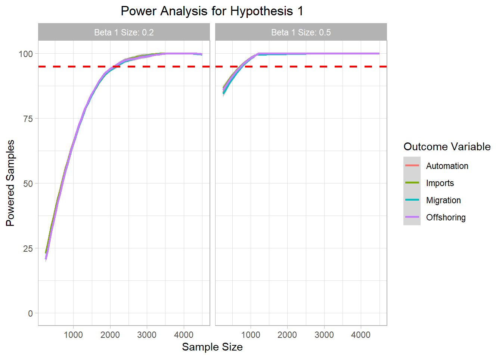
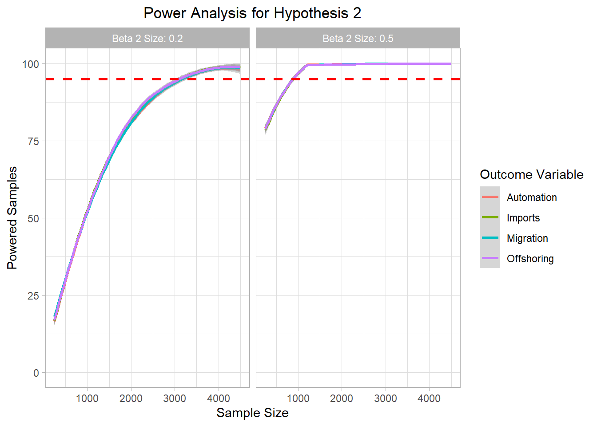
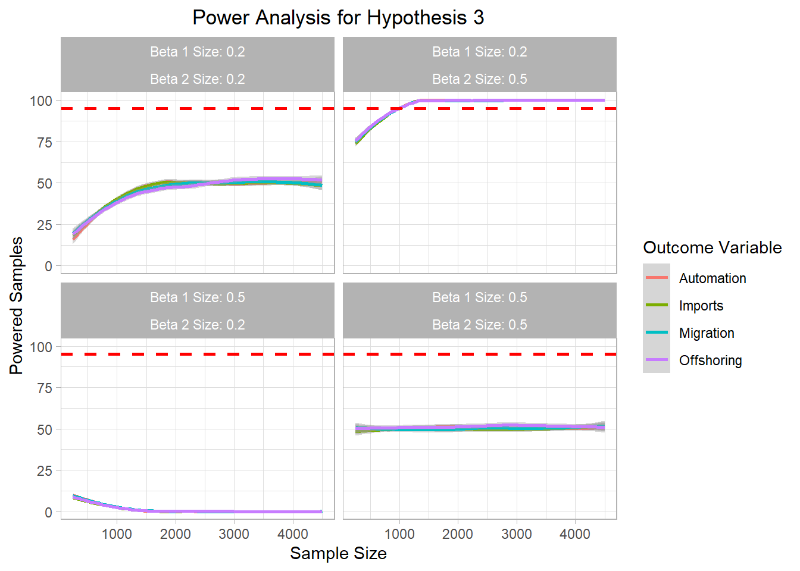
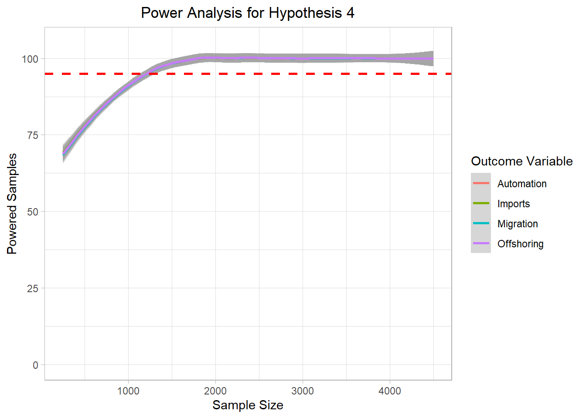
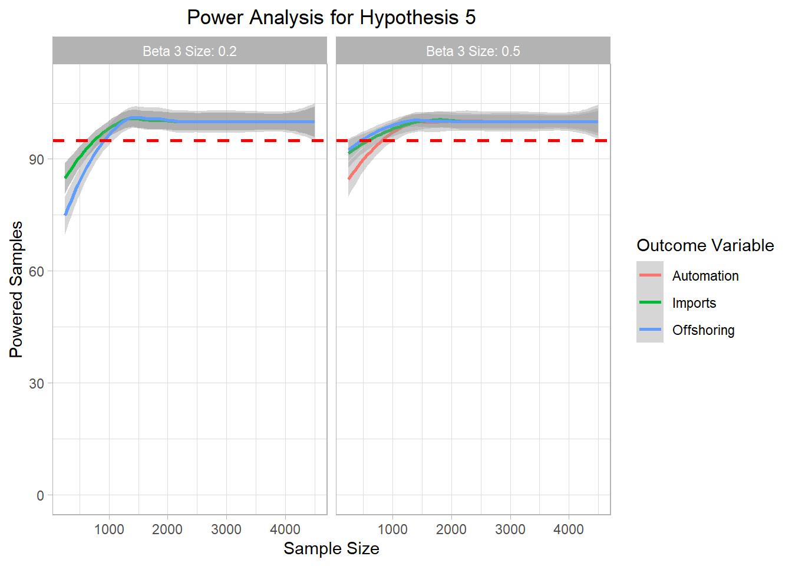
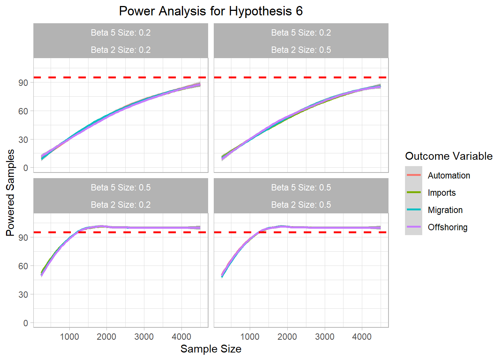
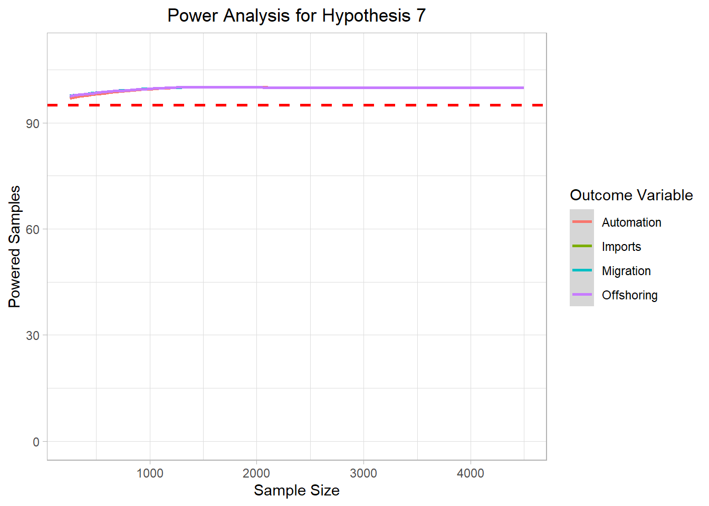

Power Analysis Plots for the Survey
R-File Plots
#####################################
# From Scratch Power Analysis Monte Carlo: Survey
######################################
# Clear Environment
rm(list=ls())
library(EnvStats, quietly = TRUE, warn.conflicts=FALSE)
library(truncnorm, quietly = TRUE, warn.conflicts=FALSE)
library(ggplot2, quietly = TRUE, warn.conflicts=FALSE)
library(haven, quietly = TRUE, warn.conflicts=FALSE)Warning: package 'haven' was built under R version 4.3.3library(readr, quietly = TRUE, warn.conflicts=FALSE)
library(tidyverse, quietly = TRUE, warn.conflicts=FALSE)Warning: package 'tidyverse' was built under R version 4.3.3── Attaching core tidyverse packages ──────────────────────── tidyverse 2.0.0 ──
✔ dplyr 1.1.4 ✔ stringr 1.5.1
✔ forcats 1.0.0 ✔ tibble 3.2.1
✔ lubridate 1.9.3 ✔ tidyr 1.3.0
✔ purrr 1.0.2
── Conflicts ────────────────────────────────────────── tidyverse_conflicts() ──
✖ dplyr::filter() masks stats::filter()
✖ dplyr::lag() masks stats::lag()
ℹ Use the conflicted package (<http://conflicted.r-lib.org/>) to force all conflicts to become errorslibrary(MASS, quietly = TRUE, warn.conflicts=FALSE)
library(ggplot2, quietly = TRUE, warn.conflicts=FALSE)
library(dplyr, quietly = TRUE, warn.conflicts=FALSE)
library(tidyr, quietly = TRUE, warn.conflicts=FALSE)
library(faux, quietly = TRUE, warn.conflicts=FALSE)
************
Welcome to faux. For support and examples visit:
https://debruine.github.io/faux/
- Get and set global package options with: faux_options()
************mcdata <- read_dta("DTA_Files/survey_power_analysis.dta")
# mcdata <- read_dta("update_power_analysis_results_mediation.dta")
mc_data_sum <- mcdata %>% group_by(sample_size, beta1, beta2, beta3,beta4,beta5,beta6,beta7) %>%
dplyr::summarize(H1_mig = sum(H1_agg_mig),
H1_imp = sum(H1_agg_imp),
H1_auto = sum(H1_agg_auto),
H1_off = sum(H1_agg_off),
H2_mig = sum(H2_agg_mig),
H2_imp = sum(H2_agg_imp),
H2_auto = sum(H2_agg_auto),
H2_off = sum(H2_agg_off),
H3_mig = sum(H3_agg_mig),
H3_imp = sum(H3_agg_imp),
H3_auto = sum(H3_agg_auto),
H3_off = sum(H3_agg_off),
H4_mig = sum(H4_agg_mig),
H4_imp = sum(H4_agg_imp),
H4_auto = sum(H4_agg_auto),
H4_off = sum(H4_agg_off),
H5_imp = sum(H5_agg_imp),
H5_auto = sum(H5_agg_auto),
H5_off = sum(H5_agg_off),
H6_mig = sum(H6_agg_mig),
H6_imp = sum(H6_agg_imp),
H6_auto = sum(H6_agg_auto),
H6_off = sum(H6_agg_off),
H7_mig = sum(H7_agg_mig),
H7_imp = sum(H7_agg_imp),
H7_auto = sum(H7_agg_auto),
H7_off = sum(H7_agg_off)
)`summarise()` has grouped output by 'sample_size', 'beta1', 'beta2', 'beta3',
'beta4', 'beta5', 'beta6'. You can override using the `.groups` argument.mc_data_sum$beta1_factor <- as.character(mc_data_sum$beta1)
mc_data_sum$beta2_factor <- as.character(mc_data_sum$beta2)
mc_data_sum$beta3_factor <- as.character(mc_data_sum$beta3)
mc_data_sum$beta4_factor <- as.character(mc_data_sum$beta4)
mc_data_sum$beta5_factor <- as.character(mc_data_sum$beta5)
mc_data_sum$beta6_factor <- as.character(mc_data_sum$beta6)
mc_data_sum$beta7_factor <- as.character(mc_data_sum$beta7)
mc_data_sum$beta1_factor <- paste("Beta 1 Size:", mc_data_sum$beta1_factor, sep = " ")
mc_data_sum$beta2_factor <- paste("Beta 2 Size:", mc_data_sum$beta2_factor, sep = " ")
mc_data_sum$beta3_factor <- paste("Beta 3 Size:", mc_data_sum$beta3_factor, sep = " ")
mc_data_sum$beta4_factor <- paste("Beta 4 Size:", mc_data_sum$beta4_factor, sep = " ")
mc_data_sum$beta5_factor <- paste("Beta 5 Size:", mc_data_sum$beta5_factor, sep = " ")
mc_data_sum$beta6_factor <- paste("Beta 6 Size:", mc_data_sum$beta6_factor, sep = " ")
mc_data_sum$beta7_factor <- paste("Beta 7 Size:", mc_data_sum$beta7_factor, sep = " ")
mc_data_H1 <- mc_data_sum %>% tidyr::pivot_longer(cols=c(H1_mig, H1_imp, H1_auto, H1_off), names_to = "H1",values_to = "H1_agg")
mc_data_H2 <- mc_data_sum %>% tidyr::pivot_longer(cols=c(H2_mig, H2_imp, H2_auto, H2_off), names_to = "H2",values_to = "H2_agg")
mc_data_H3 <- mc_data_sum %>% tidyr::pivot_longer(cols=c(H3_mig, H3_imp, H3_auto, H3_off), names_to = "H3",values_to = "H3_agg")
mc_data_H4 <- mc_data_sum %>% tidyr::pivot_longer(cols=c(H4_mig, H4_imp, H4_auto, H4_off), names_to = "H4",values_to = "H4_agg")
mc_data_H5 <- mc_data_sum %>% tidyr::pivot_longer(cols=c(H5_imp, H5_auto, H5_off), names_to = "H5",values_to = "H5_agg")
mc_data_H6 <- mc_data_sum %>% tidyr::pivot_longer(cols=c(H6_mig, H6_imp, H6_auto, H6_off), names_to = "H6",values_to = "H6_agg")
mc_data_H7<- mc_data_sum %>% tidyr::pivot_longer(cols=c(H7_mig, H7_imp, H7_auto, H7_off), names_to = "H7",values_to = "H7_agg")
mc_data_H1$H1 <- replace(mc_data_H1$H1, mc_data_H1$H1=="H1_auto","Automation")
mc_data_H1$H1 <- replace(mc_data_H1$H1, mc_data_H1$H1=="H1_imp","Imports")
mc_data_H1$H1 <- replace(mc_data_H1$H1, mc_data_H1$H1=="H1_off","Offshoring")
mc_data_H1$H1 <- replace(mc_data_H1$H1, mc_data_H1$H1=="H1_mig","Migration")
mc_data_H2$H2 <- replace(mc_data_H2$H2, mc_data_H2$H2=="H2_auto","Automation")
mc_data_H2$H2 <- replace(mc_data_H2$H2, mc_data_H2$H2=="H2_imp","Imports")
mc_data_H2$H2 <- replace(mc_data_H2$H2, mc_data_H2$H2=="H2_off","Offshoring")
mc_data_H2$H2 <- replace(mc_data_H2$H2, mc_data_H2$H2=="H2_mig","Migration")
mc_data_H3$H3 <- replace(mc_data_H3$H3, mc_data_H3$H3=="H3_auto","Automation")
mc_data_H3$H3 <- replace(mc_data_H3$H3, mc_data_H3$H3=="H3_imp","Imports")
mc_data_H3$H3 <- replace(mc_data_H3$H3, mc_data_H3$H3=="H3_off","Offshoring")
mc_data_H3$H3 <- replace(mc_data_H3$H3, mc_data_H3$H3=="H3_mig","Migration")
mc_data_H4$H4 <- replace(mc_data_H4$H4, mc_data_H4$H4=="H4_auto","Automation")
mc_data_H4$H4 <- replace(mc_data_H4$H4, mc_data_H4$H4=="H4_imp","Imports")
mc_data_H4$H4 <- replace(mc_data_H4$H4, mc_data_H4$H4=="H4_off","Offshoring")
mc_data_H4$H4 <- replace(mc_data_H4$H4, mc_data_H4$H4=="H4_mig","Migration")
mc_data_H5$H5 <- replace(mc_data_H5$H5, mc_data_H5$H5=="H5_auto","Automation")
mc_data_H5$H5 <- replace(mc_data_H5$H5, mc_data_H5$H5=="H5_imp","Imports")
mc_data_H5$H5 <- replace(mc_data_H5$H5, mc_data_H5$H5=="H5_off","Offshoring")
mc_data_H5$H5 <- replace(mc_data_H5$H5, mc_data_H5$H5=="H5_mig","Migration")
mc_data_H6$H6 <- replace(mc_data_H6$H6, mc_data_H6$H6=="H6_auto","Automation")
mc_data_H6$H6 <- replace(mc_data_H6$H6, mc_data_H6$H6=="H6_imp","Imports")
mc_data_H6$H6 <- replace(mc_data_H6$H6, mc_data_H6$H6=="H6_off","Offshoring")
mc_data_H6$H6 <- replace(mc_data_H6$H6, mc_data_H6$H6=="H6_mig","Migration")
mc_data_H7$H7 <- replace(mc_data_H7$H7, mc_data_H7$H7=="H7_auto","Automation")
mc_data_H7$H7 <- replace(mc_data_H7$H7, mc_data_H7$H7=="H7_imp","Imports")
mc_data_H7$H7 <- replace(mc_data_H7$H7, mc_data_H7$H7=="H7_off","Offshoring")
mc_data_H7$H7 <- replace(mc_data_H7$H7, mc_data_H7$H7=="H7_mig","Migration")
h1_plot <- mc_data_H1 %>% ggplot(aes(x=sample_size, y=H1_agg, color=H1))+
geom_smooth()+
ylim(0,100)+
geom_hline(yintercept=95, col="red",lty="dashed", size=1)+
labs(title="Power Analysis for Hypothesis 1",x="Sample Size",color="Outcome Variable",
y="Powered Samples")+
facet_wrap(~beta1_factor)+
theme_light()+
theme(plot.title = element_text(hjust = 0.5));h1_plotWarning: Using `size` aesthetic for lines was deprecated in ggplot2 3.4.0.
ℹ Please use `linewidth` instead.`geom_smooth()` using method = 'loess' and formula = 'y ~ x'Warning: Removed 253 rows containing missing values (`geom_smooth()`).
# ggsave("Graphics/survey_h1_plot.png")
h2_plot <- mc_data_H2 %>% ggplot(aes(x=sample_size, y=H2_agg, color=H2))+
geom_smooth()+
ylim(0,100)+
geom_hline(yintercept=95, col="red",lty="dashed", size=1)+
labs(title="Power Analysis for Hypothesis 2",x="Sample Size",color="Outcome Variable",
y="Powered Samples")+
facet_wrap(~beta2_factor)+
theme_light()+
theme(plot.title = element_text(hjust = 0.5));h2_plot`geom_smooth()` using method = 'loess' and formula = 'y ~ x'Warning: Removed 212 rows containing missing values (`geom_smooth()`).
# ggsave("Graphics/survey_h2_plot.png")
h3_plot <- mc_data_H3 %>% ggplot(aes(x=sample_size, y=H3_agg, color=H3))+
geom_smooth()+
ylim(0,100)+
geom_hline(yintercept=95, col="red",lty="dashed", size=1)+
labs(title="Power Analysis for Hypothesis 3",x="Sample Size",color="Outcome Variable",
y="Powered Samples")+
facet_wrap(~beta1_factor + beta2_factor)+
theme_light()+
theme(plot.title = element_text(hjust = 0.5));h3_plot`geom_smooth()` using method = 'loess' and formula = 'y ~ x'Warning: Removed 326 rows containing missing values (`geom_smooth()`).
# ggsave("Graphics/survey_h3_plot.png")
h4_plot <- mc_data_H4 %>% ggplot(aes(x=sample_size, y=H4_agg, color=H4))+
geom_smooth()+
ylim(0,105)+
geom_hline(yintercept=95, col="red",lty="dashed", size=1)+
labs(title="Power Analysis for Hypothesis 4",x="Sample Size",color="Outcome Variable",
y="Powered Samples")+
# facet_wrap(~beta3_factor + beta6_factor + beta2_factor)+
theme_light()+
theme(plot.title = element_text(hjust = 0.5));h4_plot`geom_smooth()` using method = 'loess' and formula = 'y ~ x'
# ggsave("Graphics/survey_h4_plot.png")
h5_plot <- mc_data_H5 %>% ggplot(aes(x=sample_size, y=H5_agg, color=H5))+
geom_smooth()+
ylim(0,110)+
geom_hline(yintercept=95, col="red",lty="dashed", size=1)+
labs(title="Power Analysis for Hypothesis 5",x="Sample Size",color="Outcome Variable",
y="Powered Samples")+
facet_wrap(~beta3_factor)+
theme_light()+
theme(plot.title = element_text(hjust = 0.5));h5_plot`geom_smooth()` using method = 'loess' and formula = 'y ~ x'
# ggsave("Graphics/survey_h5_plot.png")
h6_plot <- mc_data_H6 %>% ggplot(aes(x=sample_size, y=H6_agg, color=H6))+
geom_smooth()+
ylim(0,110)+
geom_hline(yintercept=95, col="red",lty="dashed", size=1)+
labs(title="Power Analysis for Hypothesis 6",x="Sample Size",color="Outcome Variable",
y="Powered Samples")+
facet_wrap(~beta5_factor + beta2_factor)+
theme_light()+
theme(plot.title = element_text(hjust = 0.5));h6_plot`geom_smooth()` using method = 'loess' and formula = 'y ~ x'
# ggsave("Graphics/survey_h6_plot.png")
h7_plot <- mc_data_H7 %>% ggplot(aes(x=sample_size, y=H7_agg, color=H7))+
geom_smooth()+
ylim(0,110)+
geom_hline(yintercept=95, col="red",lty="dashed", size=1)+
labs(title="Power Analysis for Hypothesis 7",x="Sample Size",color="Outcome Variable",
y="Powered Samples")+
theme_light()+
theme(plot.title = element_text(hjust = 0.5));h7_plot`geom_smooth()` using method = 'loess' and formula = 'y ~ x'
# ggsave("Graphics/survey_h7_plot.png")